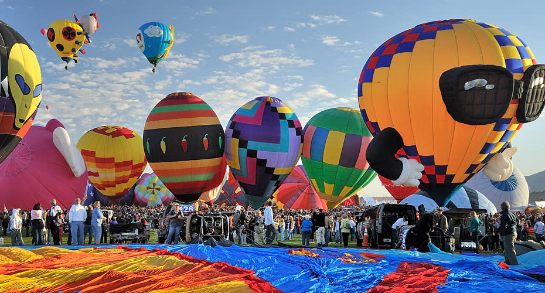
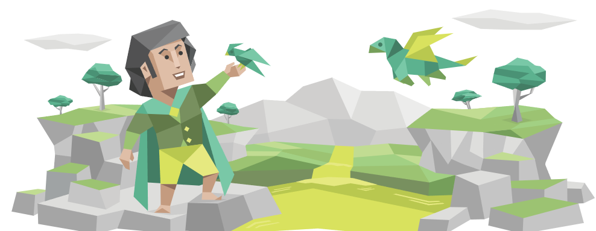

Place of Birth
I was born in Albuquerque, New Mexico on October 2, 1995. I was the 2nd child of 6 siblings and ended up being somewhat of the middle child. The Balloon Fiesta (shown above) was one of my favorite places to visit every year and it served as a major tourist attraction.
Growing Up
I grew up between two households, and swapped every other week until I reached aged 12. I moved from Rio Rancho, to Albuquerque, and finally landed in Los Lunas throughout my teenage life. I enjoyed playing soccer with friends, learning, and spending time with family. Learning at this point was my top priority and that became a huge standard later in life.
Education
I started my early elementary years balanced between Rio Rancho Elementary School along with Arroyo Del Oso in Albuquerque, New Mexico Middle and Highschool was spent in Los Lunas until I moved to Colorado in my senior year. I started college at UNM for Computer Engineering, and eventually transferred over to CSU Global as a Computer Scientist to pursue my final years. Currently, I am only one trimester away from graduating!
Hardships
Various hardships came into play throughout my life. Some of these included having separated parents, working through ADHD hinderances, and struggling through depression. Years of therapy, self help, and support helped me to stay strong through my struggles and I have been overall more joyful in life.
Personality
I am considered to be an INFP or having Introverted, Intuitive, Feeling, and Prospecting traits. This leads to a very quiet, creative, and empathetic person. I absolutely love deeper conversations, seeing life through the eyes of others, and looking beyond social norms. These traits definitely led me into a quieter field and led me to being on the computer quite a bit more.